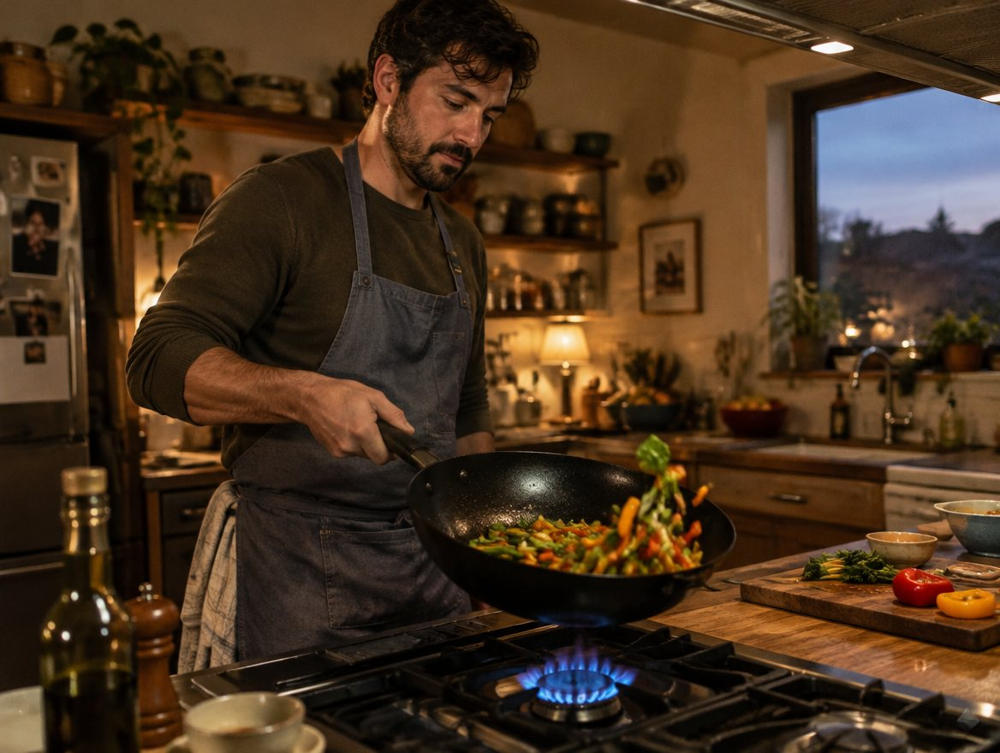

I replaced my nonstick pan every 18 months. The coating scratched, food started sticking, and I'd buy another one.
A chef friend told me to stop. "Buy one carbon steel pan and you'll never buy a pan again."
"It's what restaurant kitchens use. It gets better the more you cook with it."
What changed
Nothing to scratch offJust steel. The surface is built up by cooking, not sprayed on.
Eggs slide after week oneA little oil, medium heat, and it releases like nonstick.
It sears like a restaurantIt takes high heat, goes in the oven, and works on induction.

Six months in, it's the only pan on my stove. It's lighter than cast iron, and it heats up in half the time.